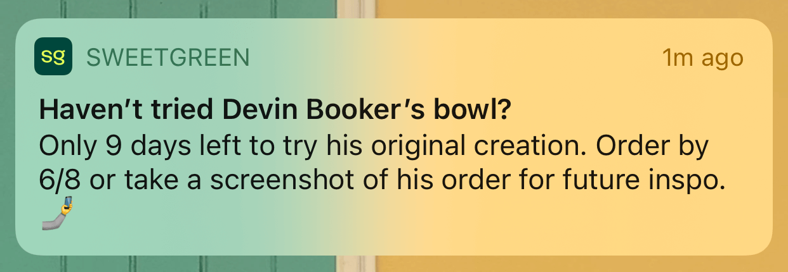

I only care about the helpful notifications, not the promotional ones
Taking a look at coarse grained notification options that allow apps to sneak in marketing notifications
Jun 5, 2022 · 650 words · 4 minutes read
Here’s a scenario. First, you download an app for a service that has some sort of in-person component, like picking up an order or meeting a driver at the curb. When using that app for the goal, be it that order or that meeting, it’s very helpful to have notifications, since they give you the current status and it can be important to coordinate.
You’d like to get a notification for when your order is ready, since that takes away the need for you to repeatedly poll the app and refresh constantly. This makes sense.
You get your notification, you meet your driver or pick up your order, and all’s well. Those notifications helped you coordinate during the transaction, and hopefully you were able to pick up your order before it got too cold. Maybe you get a follow up notification to rate your experience, but other than that, these notifications were helpful. You probably don’t even think about disabling them, since maybe the next time you use the app you’ll want those helpful pings again.
Now it’s a week later, and you haven’t used the app since. Your phone lights up with a notification from the same app.

Ahh, tricky. You want notifications during the transaction, the goal sequence, the thing you downloaded the app for. They’ve got you to enable notifications, since they can be helpful, but now they’ve co-opted that notification consent to send you marketing notifications.
I don’t want to be notified that there are only 9 days left to try Devin Booker’s salad (no offense to Devin Booker). I want to be notified when there are things that need my attention in real time during this business transaction we’re engaged in.
What are you going to do? The only control available (for me, at the time of writing) is to disable notifications at the app level. That seems coarse grained, especially since I do want some of those notifications. Am I really going to enable and disable them every time I use the app? Maybe, but that’s additional toil, and maybe I won’t always remember to. It would be nice if there were finer grained or more accessible controls, like if there was an option when long-pressing the app on the home screen to quickly enable or disable notifications.
Better yet, it would be great to have some sort of “disable marketing notifications” inside the app. Great for us users, but not as great for the companies that are knowingly using this channel for both useful and unuseful notifications and their business engagement metrics. I say “knowingly”, because it’s pretty clear when you look at something like Starbucks’ notifications options:
Dear @Starbucks, this is actually very simple: if you put promotions and order status into the same notifications bucket then you will not be allowed to deliver either. pic.twitter.com/6t64veJyUQ
— Malte Ubl (@cramforce) May 26, 2022
Tricky. The only way to disable notifications for promotions is to also disable notifications for order status, the latter being the actual useful ones. By removing the user’s explicit choice between the two, they’re grouping the helpful with the unhelpful, and I’m sure they’re getting that many more engagements because of it.
Is it a disconnect between user intent and the app’s actual behavior? By not giving the user an explicit choice, they naively accept that “yes to all notifications” option, the only option, when really I think we all know what notifications are the most helpful to the user. It’s like pretending that because you want all of your mail delivered, you also want junk mail delivered. That’s why I find the Starbucks example so interesting — they’re clearly showing the strict pairing of the two!
I’ll be keeping an eye out for this channel re-use. For now I’ll take on the toil to disable them as needed, but it would be nice if we didn’t have to.